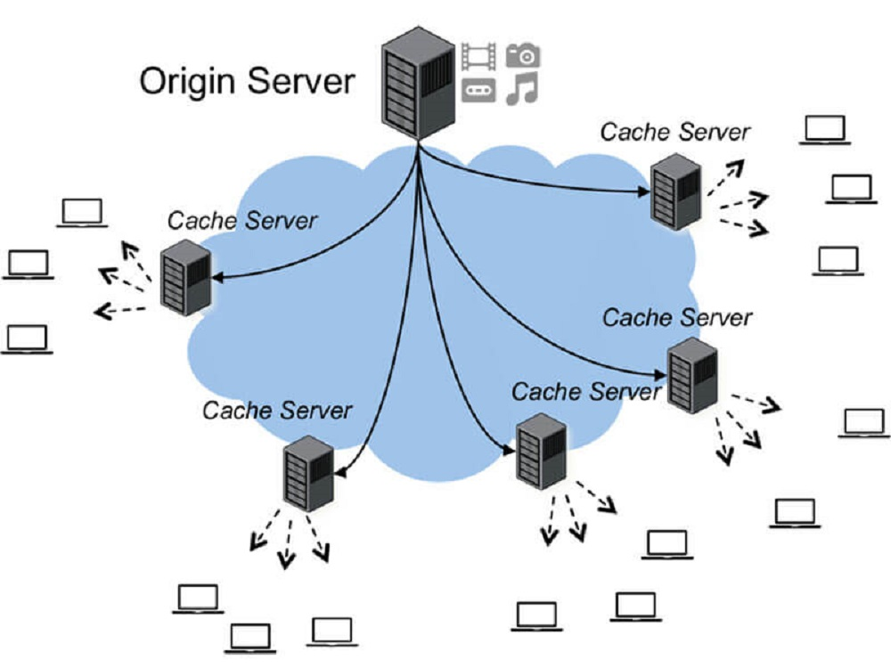
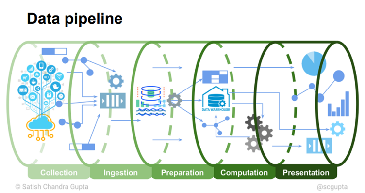

TEAM 7 PROJECT PROPOSAL:
PROCESS, ANALYZE, VISUALIZE AND USER DATA MINING FROM CONTENT DELIVERY NETWORK SYSTEM
In this paper, we will discuss further about the benefits of extracting and analyzing user data from CDN, our method of approaching this issue as well as a few relevant researches.
BASIC CONCEPTS
In order to optimize load speed, service providers have to apply many technical methods, and one of the most commonly-used solutions is setting up a geographically distributed group of servers which work together, which is usually referred to as Content Delivery Network
Not only does CDN tackle with network congestion but also bring in a massive amount of data created by users through the platforms. For internet service, such information will help them to distribute the servers properly to satisfy the customers and optimize the budget for this job.
MOTIVATION
Our goal is to understand the situation and know the reasons why CDN is extremely popular, as well as the process to make prediction for content popularity.
This research includes an overview about CDN, our expected product, the approaches proposed in literature to conduct this research and an example of CDN in commercial.
METHODOLOGY
Approach and implementation methods.
Desk research: apply synthesis methods, analytical techniques to process collected data and statistic (both Vietnamese and foreign language documents) and apply Benchmarking method to compare the analysis’s result with research results already available at home and abroad.
Data used in the study is primary data which is obtained from reputable sources.
We conduct this product through these steps below:
PLAN
-
Introduce our project, purpose. related work. methodology, plan
-
Data collection, data ingestion, data preparation
-
Gain an insight into the dataset. Determine the research path
-
Visualize the dataset with graph, table and their relationship
-
Build a ML model for content popularity prediction
ABOUT
We are Team 7
Le Bao Khanh
K19
Team Leader
Kha Sang
K20
Team Member
Trần Ngọc Mai Thảo
K20
Team Member
Nguyễn Đình Thiên Huy
K21
Team Member